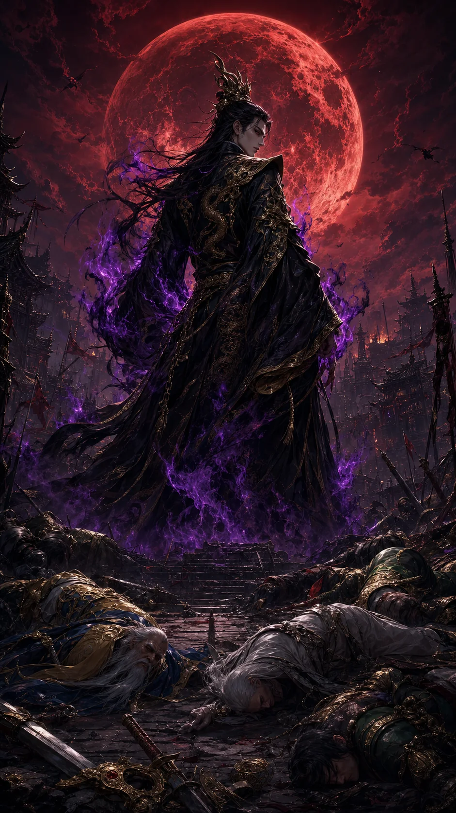
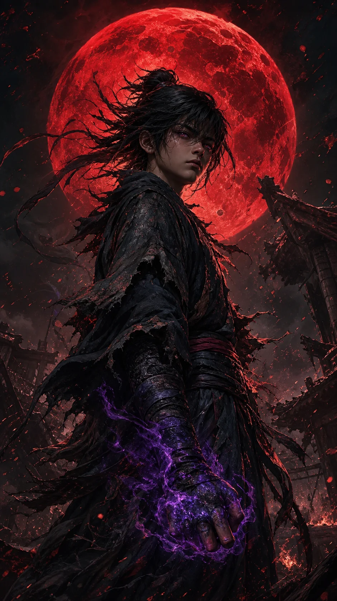
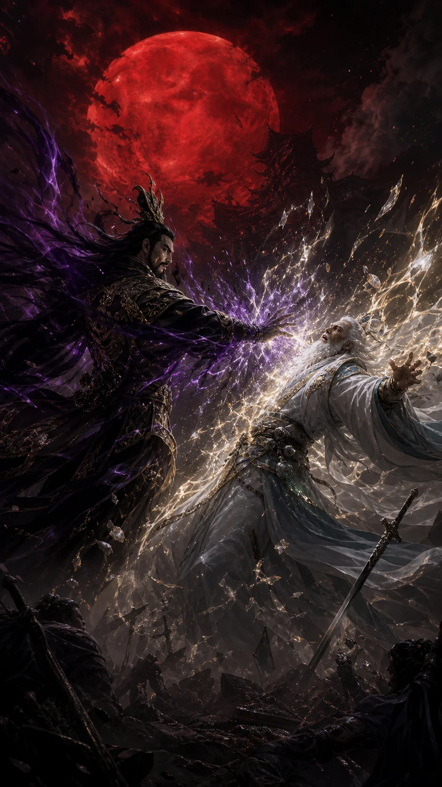
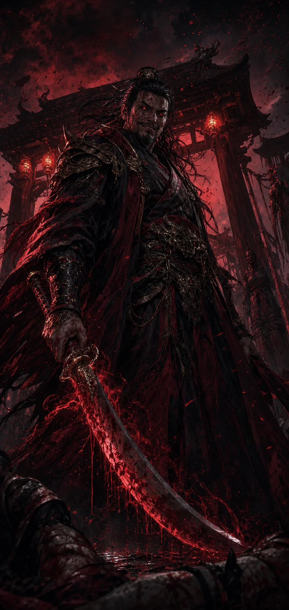

第一
혈월(血月)의 배신
정파 삼황과 무림맹주를 꺾고 천하를 굽어본 순간, 가장 믿던 부교주 진혈천의 손이 가슴을 꿰뚫는다. “…천한 핏줄이 오르기엔, 그 자리는 너무 높았습니다.”

“삼황도, 무림맹주도 꺾었다.
이제 이 천하에… 나를 막을 자는 없다.”
— 천마, 혈월(血月)이 뜬 밤
한미한 군소문파의 천출(賤出)로 태어나, 오직 실력으로 마교의 정점 천마에 올랐다. 허나 승리에 취한 그 밤, 가장 믿었던 부교주의 칼이 등을 꿰뚫는다. 눈을 뜨니 — 모든 것을 잃기 전, 열다섯의 운휘로 돌아와 있다.

정파 삼황과 무림맹주를 꺾고 천하를 굽어본 순간, 가장 믿던 부교주 진혈천의 손이 가슴을 꿰뚫는다. “…천한 핏줄이 오르기엔, 그 자리는 너무 높았습니다.”

깨어보니 멸문한 운가장의 별채, 깨진 청동거울 속 어린 얼굴. 천마에 오르기도, 마교에 발 들이기도 전. 머릿속엔 한 시대를 호령한 모든 무학이 그대로 남아 있다.

빈손의 어린 몸으로 내공을 다스리고 무공을 새긴다. 빚쟁이, 녹림의 산적, 흑점의 거간을 지나 마교의 시험 혈안나찰 도굉이 가로막는다. 한 수, 한 수 — 정상으로 가는 길을 되짚는다.
등을 찌른 칼은 진혈천이었다. 그러나 그 칼을 쥐어준 손은 — 회귀 내내 운휘를 돕던 따뜻한 멘토, 사독린이었다. 시원한 복수로 끝낼 것인가, 그 배신 속에 숨은 진짜 이유를 향해 나아갈 것인가. 선택은 엔딩을 가른다.
“혈천. 그리고 나를 짓밟고 비웃던 그 모든 것들. …이번엔, 내가 끝낸다.”
Night of the Full Moon에서 영감을 얻은, 무림으로 재해석한 턴제 덱빌딩 로그라이크.
매 턴 회복되는 내공(內功)을 배분해 무공 카드를 엮는다. 저코스트 콤보부터 일격필살까지, 카드 한 장이 곧 무게 있는 선택.
음(陰)·양(陽)·암(暗)·성(聖)·무(無). 어떤 심법을 익히느냐가 덱의 정체성을 결정한다. 운기조식으로 수련하고, 심법을 갈아탈 수도 있다.
전투 속 누적 내공·손패, 생애에 걸친 등급(F~S·1~12성)과 숙련, 그리고 회귀를 넘어 쌓이는 전생 프레스티지.
여정(旅程)·기로(岐路)·관문으로 이어지는 노드맵. 죽음은 끝이 아니라 다음 회귀의 시작. 매 생(生)마다 다른 길이 열린다.
흑점(黑店)에서 은자로 무공·영약을 사고판다. 검·도·창·궁 등 11종 무기는 저마다 다른 패시브로 빌드를 통째로 바꾼다. 인벤토리·도감까지.
모바일 세로(720×1280) 전용. 하단 손패를 끌어 두는 직관적 터치. 중국어·한국어·영어·베트남어·일본어 자막을 지원한다.
상극(相剋) 상성이 전투를 지배한다. 같은 카드 풀이라도, 심법이 다르면 완전히 다른 게임이 된다.
“혼자 오른 정상은, 너무 추웠으니.”
출시 소식을 가장 먼저 받아보세요. 사전 예약자에게 특전이 준비됩니다.